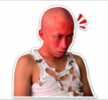

Lulusan SMK Telkom Jakarta berpengalaman mendalam di bidang Network Operation Center (NOC), Engineering, serta Maintenance. Terbiasa memimpin tim lapangan, merancang monitoring jaringan real-time, dan melakukan troubleshooting infrastruktur.

Memimpin operasional Helpdesk & NOC, berfokus pada pemantauan kualitas jaringan secara real-time, eskalasi gangguan, koordinasi penanganan insiden, serta manajemen performa tim.
Bertanggung jawab dalam pemantauan status perangkat jaringan backbone, penanganan tiket gangguan, serta troubleshooting awal infrastruktur jaringan.
Monitored VSAT & Fiber network status using Zabbix & Grafana. Memimpin tim NOC dalam pengawasan ketersediaan layanan dan koordinasi penanganan insiden skala besar.
Monitoring tim lapangan untuk perbaikan jaringan infrastruktur, penanganan tiket rute kabel optik, serta pengawasan insiden sistem.
Mengarahkan dan mengawasi tim lapangan FTTH (Fiber to the Home), mulai dari proses penggelaran, pemeliharaan, hingga perbaikan alur jaringan.
Melakukan troubleshooting kabel optik FTTH serta penanganan kendala fisik/perangkat pada jalur backbone.
Dukungan teknis jaringan, integrasi layanan pelanggan, dan pemeliharaan perangkat jaringan lokal.